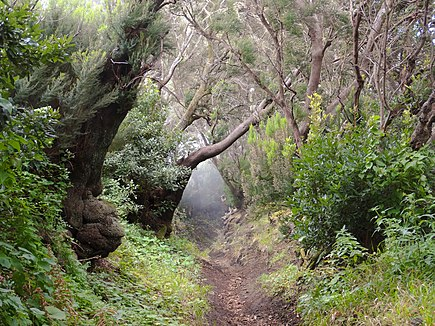
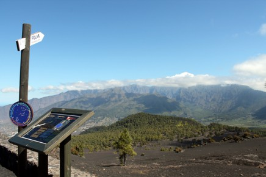

Lugares destacados
La playa de Tacorón, también conocido como Tecorón es una playa en el suroeste de la isla de El Hierro, en Canarias. Pertenece al municipio de El Pinar y se encuentra a 5 km de este y a 9 km de La Restinga. Se encuentra incluida en el Parque rural de Frontera y en la Reserva Marina del entorno de la Punta de La Restinga-Mar de las Calmas. Es uno de los principales destinos turísticos de sol y playa, de la isla y se trata de una de las 11 mejores playas de Canarias según National Geographic. |

Cumbre Vieja |
Frente al mar y en la parte oeste de la isla de El Hierro, el Faro de Orchilla fue, hasta hace unos años, el punto donde se situaba el Meridiano Cero. Este icónico rincón de la isla menor de las Islas Canarias es un abismo a lo desconocido. Situado en la Punta de la Orchilla y de fácil acceso en coche, es un lugar para visitar: por sus cielos, sus atardeceres anaranjados y por la paz que se respira. |

Mirador de Jable |
El Mirador Astronómico del Llano del Jable está ubicado en el municipio de El Paso, a unos 1341 metros de altura, desde el cual se puede disfrutar de una vista panorámica del Valle de Aridane y de una magnífica puesta de Sol. El Llano del Jable representa un lugar especial para la observación nocturna del cielo, debido a que las nubes suelen quedarse por debajo de los 1300 metros de altura (cubriendo la ya de por sí poca contaminación lumínica del Valle), por lo que desde aquí se puede contemplar un maravilloso cielo estrellado./p> |

La Llanía |
El charco Azul, en El Hierro, es una de las zonas de baño más espectaculares y entrañables de la menor de las Islas Canarias. Compendio de las múltiples formas que dejó la lava, este rincón no solo le obsequiará con placenteros baños en sus aguas turquesas, sino que lo hará protegiéndole con un roquete del imponente océano, que deja su impronta con su rompiente de espuma blanca y sonido envolvente. |

El Charco azul |